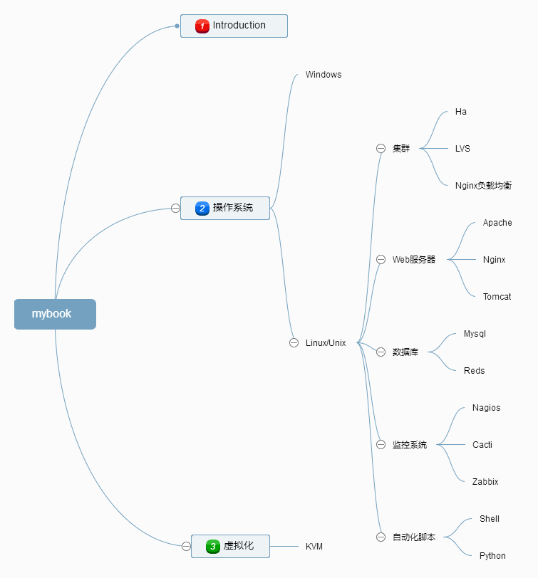

Home
1.1.
Introduction
2.1.
操作系统
2.1.1.
windows
2.1.2.
Linux/Unix
2.1.2.1.
集群
2.1.2.1.1.
Ha
2.1.2.1.2.
LVS
2.1.2.1.3.
Nginx负载均衡
2.1.2.2.
Web服务器
2.1.2.2.1.
Apache
2.1.2.2.2.
Nginx
2.1.2.2.3.
Tomcat
2.1.2.3.
数据库
2.1.2.3.1.
Mysql
2.1.2.3.2.
Radis
2.1.2.4.
监控系统
2.1.2.4.1.
Cacti
2.1.2.4.2.
Nagios
2.1.2.4.3.
Zabbix
2.1.2.5.
自动化脚本
2.1.2.5.1.
Shell
2.1.2.5.2.
Python
2.2.
虚拟化
本书使用 GitBook 发布
Introduction
运维笔记
运维笔记
这是一个基于gitbook的个人资料库，主要记录工作中遇到的一些问题和知识总结。
希望同在科技之海寻找方向与解答的大家一起学习、成长。请大家不吝指教~
本书大纲如下

results matching "
"
No results matching "
"